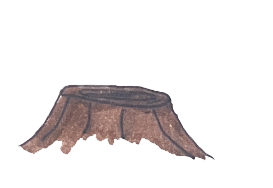

"The Giving Tree", written in 1964, by Shel Silverstein tells the story of a tree and a boy who develop a close friendship, with the tree generously providing for the boy's needs at various stages of his life. In the end the tree is nothing more than a stump but it turns out the boy is ow an old man and only needs a good place to sit. I created his website in 2025 with quotes from the book. Click the stump to go through the website again. -William Evans